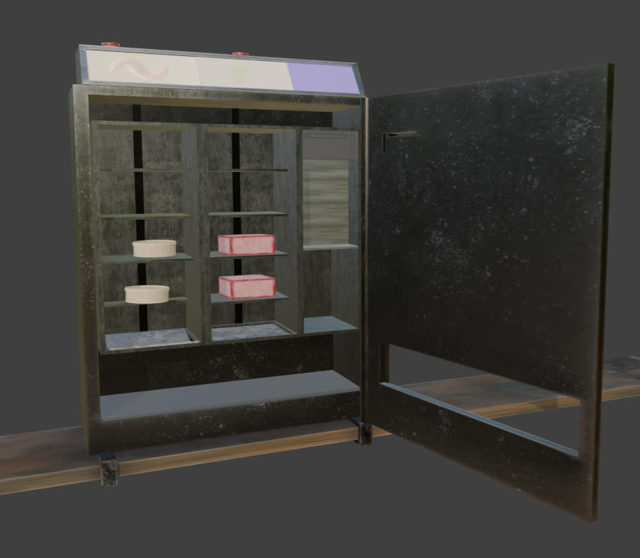

About Slackwater Supply

Built for Still Water and Bad Weather
Slackwater Supply began as a small coastal outfitter
serving anglers throughout the Pacific Northwest.
After years of adapting equipment to withstand harsh
weather, saltwater exposure, and changing tides, the
company expanded into developing products designed
specifically for real-world fishing conditions.
Our roots are in the marshes, backwaters, and coastal
waterways where changing conditions demand dependable
equipment and practical solutions. Rather than focusing
on trends, Slackwater Supply focuses on reliability,
durability, and practical innovation.
Every product is designed with the goal of helping
anglers spend less time fighting their equipment and
more time enjoying the water. From specialized tackle
to automated bait preparation systems, our focus remains
on creating tools that solve real problems.
Today, the company continues to support recreational
fishers, marinas, and coastal communities through
product development, education, and a commitment to
responsible outdoor stewardship.
```